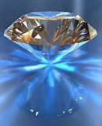

DIAMONDS

ABOUT:
Diamond is a solid form of the element carbon with its atoms arranged in a crystal structure called diamond cubic. At room temperature and pressure, another solid form of carbon known as graphite is the chemically stable form, but diamond almost never converts to it. Diamond has the highest hardness and thermal conductivity of any natural material, properties that are utilized in major industrial applications such as cutting and polishing tools. They are also the reason that diamond anvil cells can subject materials to pressures found deep in the Earth.
Because the arrangement of atoms in diamond is extremely rigid, few types of impurity can contaminate it (two exceptions being boron and nitrogen). Small numbers of defects or impurities (about one per million of lattice atoms) color diamond blue (boron), yellow (nitrogen), brown (defects), green (radiation exposure), purple, pink, orange or red. Diamond also has relatively high optical dispersion (ability to disperse light of different colors).
Most natural diamonds have ages between 1 billion and 3.5 billion years. Most were formed at depths between 150 and 250 kilometres (93 and 155 mi) in the Earth's mantle, although a few have come from as deep as 800 kilometres (500 mi). Under high pressure and temperature, carbon-containing fluids dissolved minerals and replaced them with diamonds. Much more recently (tens to hundreds of million years ago), they were carried to the surface in volcanic eruptions and deposited in igneous rocks known as kimberlites and lamproites.
Synthetic diamonds can be grown from high-purity carbon under high pressures and temperatures or from hydrocarbon gas by chemical vapor deposition (CVD). Imitation diamonds can also be made out of materials such as cubic zirconia and silicon carbide. Natural, synthetic and imitation diamonds are most commonly distinguished using optical techniques or thermal conductivity measurements.